This step-by-step guide will quickly get you started on Leaflet basics, including setting up a Leaflet map, working with markers, polylines and popups, and dealing with events.

.png) 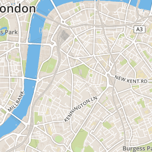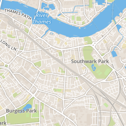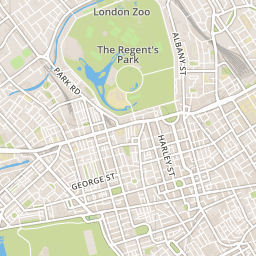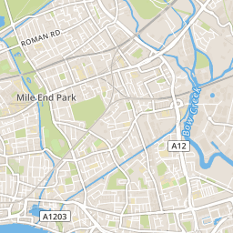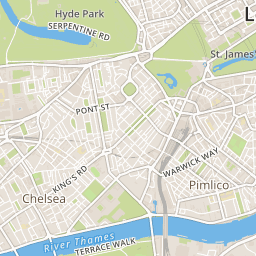
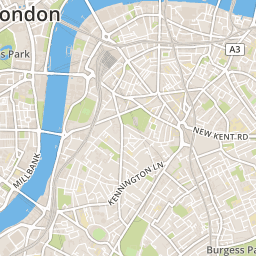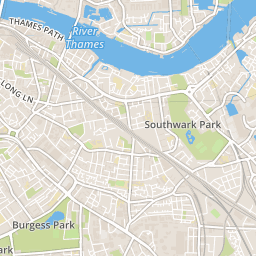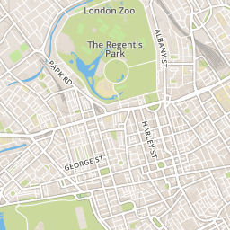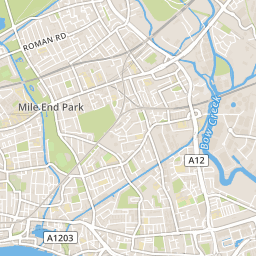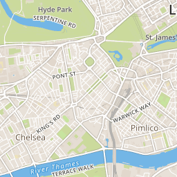.png)

.png)
.png)
.png)
.png)
.png) 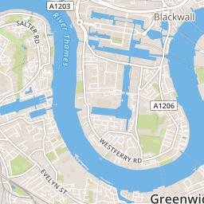
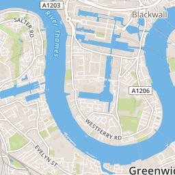View example on a separate page →
Before writing any code for the map, you need to do the following preparation steps on your page:
Include Leaflet CSS file in the head section of your document:
<link rel="stylesheet" href="http://cdn.leafletjs.com/leaflet/v0.7.7/leaflet.css" />
Include Leaflet JavaScript file:
<script src="http://cdn.leafletjs.com/leaflet/v0.7.7/leaflet.js"></script>
Put a div element with a certain id where you want your map to be:
<div id="mapid"></div>
Make sure the map container has a defined height, for example by setting it in CSS:
#mapid { height: 180px; }Now you’re ready to initialize the map and do some stuff with it.
Let’s create a map of the center of London with pretty Mapbox Streets tiles. First we’ll initialize the map and set its view to our chosen geographical coordinates and a zoom level:
var mymap = L.map('mapid').setView([51.505, -0.09], 13);
By default (as we didn’t pass any options when creating the map instance), all mouse and touch interactions on the map are enabled, and it has zoom and attribution controls.
Note that setView call also returns the map object — most Leaflet methods act like this when they don’t return an explicit value, which allows convenient jQuery-like method chaining.
Next we’ll add a tile layer to add to our map, in this case it’s a Mapbox Streets tile layer. Creating a tile layer usually involves setting the URL template for the tile images (get yours at Mapbox), the attribution text and the maximum zoom level of the layer:
L.tileLayer('https://api.tiles.mapbox.com/v4/{id}/{z}/{x}/{y}.png?access_token={accessToken}', {
attribution: 'Map data © <a href="http://openstreetmap.org">OpenStreetMap</a> contributors, <a href="http://creativecommons.org/licenses/by-sa/2.0/">CC-BY-SA</a>, Imagery © <a href="http://mapbox.com">Mapbox</a>',
maxZoom: 18,
id: 'your.mapbox.project.id',
accessToken: 'your.mapbox.public.access.token'
}).addTo(mymap);Make sure all the code is called after the div and leaflet.js inclusion. That’s it! You have a working Leaflet map now.
It’s worth noting that Leaflet is provider-agnostic, meaning that it doesn’t enforce a particular choice of providers for tiles, and it doesn’t even contain a single provider-specific line of code, so you’re free to use other providers if you need to (we’d recommend Mapbox though, it looks beautiful).
.png)
Besides tile layers, you can easily add other things to your map, including markers, polylines, polygons, circles, and popups. Let’s add a marker:
var marker = L.marker([51.5, -0.09]).addTo(mymap);
Adding a circle is the same (except for specifying the radius in meters as a second argument), but lets you control how it looks by passing options as the last argument when creating the object:
var circle = L.circle([51.508, -0.11], 500, {
color: 'red',
fillColor: '#f03',
fillOpacity: 0.5
}).addTo(mymap);
Adding a polygon is as easy:
var polygon = L.polygon([
[51.509, -0.08],
[51.503, -0.06],
[51.51, -0.047]
]).addTo(mymap);
Popups are usually used when you want to attach some information to a particular object on a map. Leaflet has a very handy shortcut for this:
marker.bindPopup("<b>Hello world!</b><br>I am a popup.").openPopup();
circle.bindPopup("I am a circle.");
polygon.bindPopup("I am a polygon.");
Try clicking on our objects. The bindPopup method attaches a popup with the specified HTML content to your marker so the popup appears when you click on the object, and the openPopup method (for markers only) immediately opens the attached popup.
You can also use popups as layers (when you need something more than attaching a popup to an object):
var popup = L.popup()
.setLatLng([51.5, -0.09])
.setContent("I am a standalone popup.")
.openOn(mymap);
Here we use openOn instead of addTo because it handles automatic closing of a previously opened popup when opening a new one which is good for usability.
Every time something happens in Leaflet, e.g. user clicks on a marker or map zoom changes, the corresponding object sends an event which you can subscribe to with a function. It allows you to react to user interaction:
function onMapClick(e) {
alert("You clicked the map at " + e.latlng);
}
mymap.on('click', onMapClick);
Each object has its own set of events — see documentation for details. The first argument of the listener function is an event object — it contains useful information about the event that happened. For example, map click event object (e in the example above) has latlng property which is a location at which the click occured.
Let’s improve our example by using a popup instead of an alert:
var popup = L.popup();
function onMapClick(e) {
popup
.setLatLng(e.latlng)
.setContent("You clicked the map at " + e.latlng.toString())
.openOn(mymap);
}
mymap.on('click', onMapClick);
Try clicking on the map and you will see the coordinates in a popup. View the full example →
Now you’ve learned Leaflet basics and can start building map apps straight away! Don’t forget to take a look at the detailed documentation or other examples.